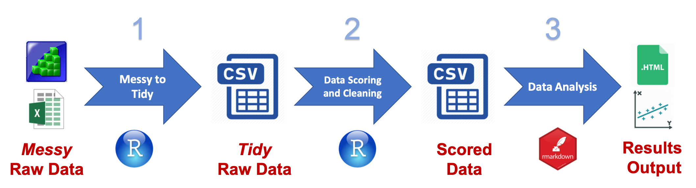

Chapter 12 Messy to Tidy: 0_task_raw.R

In this Chapter you will go over an example of how to write an R Script for converting messy raw data files to tidy raw data files.
12.1 Setup
In the previous Chapters you should have downloaded the example Flanker data set, setup your directory organization, and created an RStudio Project.
If you have not done so already, open RStudio by opening the UseRGuide_DataCollection.Rproj R Project file.
In the folder R Scripts/templates open the file 0_taskname_raw.R and save it as 0_flanker_raw.R in the R Scripts folder.
If you do not see the template file 0_taskname_raw.R, you can download it. Just type in the following line of code in the console
workflow::template(rawscript = TRUE)In the script file take note of the import and output directories.
Change task <- "taskname" to task <- "Flanker"
Just by looking at the Setup section of the script you should be able to tell that this script will import the file Data Files/Merged/Flanker.txt and output the file Data Files/Flanker_raw.csv.
Note: Typically you will have to create the Flanker.txt file by using E-Merge and exporting the .emrg file to a .txt file. I have performed this step for you already.
12.2 Import
Now it happens on occasion that the wrong subject number is entered in when an RA is starting up a task. This can result in duplicate Subject numbers in the E-Merge file. Luckily I have created a function to remove the duplicate subjects, and put their information (with session date and time) into a specific file. This file will be created in a new folder called “duplicates”.
The function is duplicates_remove() from the datawrangling package on my GitHub.
It can be difficult to remember what arguments you need to include in a function. To see helpful documentation about a function you can type in the console
?duplicates_removeFirst, to the Setup section add the line of code to load the datawrangling package.
library(datawrangling)To the import section add the following line of code with the pipe operator %>%
#### Import ####
import <- read_delim(here(import.dir, import.file),
"\t", escape_double = FALSE, trim_ws = TRUE) %>%
duplicates_remove(taskname = task,
output.folder = here(output.dir, "duplicates"))
################Execture the lines of code up to and including import.
You will notice that there was a folder created called duplicates in the Data Files folder. Open the file contained in this folder, Flanker_duplicates.csv. These are duplicate subject numbers and must be taken care of. For the sake of this guide, however, we will not do anything with them now. Though, they have been removed from the data.
View the dataframe by typing in the console
View(import)It is a mess, right? Here are some things you need to know about the messy raw data file. These are the columns and what type of values they contain:
Subject: Subject number
Procedure[Trial]: Procedure type (keep: TrialProc and PracTrialProc)
PracTrialList.Sample: Trial number for practice trials
TrialList.Sample: Trial number for real trials
FlankerType: condition for real and practice trials (Values are: congruent, incongruent, and neutral)
PracSlideTarget.RT: Reaction time for practice trials
PracSlideTarget.ACC: Accuracy for practice trials
PracSlideTarget.RESP: Response for practice trials ({LEFTARROW} = left and {RIGHTARROW} = right)
SlideTarget.RT: Reaction time for real trials
SlideTarget.ACC: Accuracy for real trials
SlideTarget.RESP: Response for real trials ({LEFTARROW} = left and {RIGHTARROW} = right)
TargerDirection: direction of the target arrow for practice trials
TargetDirection: direction of the target arrow for real trials
SessionDate: Date of session
SessionTime: Time of session
12.3 Tidy raw data
After the import block of R code, the next block is where we actually tidy the messy raw data. This basically involves filtering rows, renaming columns, changing values in columns, and selecting columns. And accordingly you will use these dplyr functions to do so:
filter()rename()mutate()select()
For a more detailed explanation on how these functions work, see Chapter 5.
12.3.1 Filter
Filter only relevant rows. We want to keep only the rows that contain trials from the practice and real trials (rows from the Instruction procedure and End Screen are in the imported data).
#### Tidy raw data ####
data_raw <- import %>%
filter(`Procedure[Trial]`=="TrialProc" |
`Procedure[Trial]`=="PracTrialProc")
#######################The column names are contained in single ticks because the names contain the special characters [ ]. There are certain characters R does not like to use as variable names and one of them is square brackets.
This line of code is saying only include (filter) rows where Procedure[Trial] is equal to TrialProc or (|) Procedure[Trial] is equal to PracTrialProc.
12.3.2 Rename Columns
Now the column specifying real vs practice trials is a little tedious to keep typing out since it requires the single quotes and brackets. To rename columns we can use rename() function in dplyr.
#### Tidy raw data ####
data_raw <- import %>%
filter(`Procedure[Trial]`=="TrialProc" |
`Procedure[Trial]`=="PracTrialProc") %>%
rename(TrialProc = `Procedure[Trial]`)
#######################This line of code renames the column Procedure[Trial] to TrialProc.
12.3.3 Change Values
We should change the values in TrialProc.
unique(data_raw$TrialProc)## [1] "PracTrialProc" "TrialProc"Right now real trials have the value of TrialProc. The same name as the column, not good! And the “practice” trials have the value of PractTrialProc. Let’s change these values simply to real and practice, respectively.
We can use a combination of mutate() and case_when() to change these values.
#### Tidy raw data ####
data_raw <- import %>%
filter(`Procedure[Trial]`=="TrialProc" |
`Procedure[Trial]`=="PracTrialProc") %>%
rename(TrialProc = `Procedure[Trial]`) %>%
mutate(TrialProc = case_when(TrialProc == "TrialProc" ~ "real",
TrialProc == "PracTrialProc" ~ "practice"))
#######################case_when() is an alternative to an ifelse(). The second line of the case_when() might read something like: when the value in the column TrialProc is equal to “PracTrialProc” set (~) TrialProc = “practice”.
Evaluate that this worked
unique(data_raw$TrialProc)## [1] "practice" "real"Okay now let’s move on to figuring out what other columns we want to keep and if we need to do any more computations on them.
We want to keep the columns that specify the following information
- Subject number
- TrialProc (real vs practice)
- Trial number
- Condition (congruent vs incongruent)
- Reaction time
- Accuracy
- Response
- Target arrow direction (left or right)
- Session Date
- Session Time
This gets a little more tricky here because the information for some of these variables are in one column for practice trials and a different column for real trials. That means we need to merge the information from these two columns into one.
For instance the RT data for practice trials is contained in the column PracSlideTarget.RT and for real trials RT data is in SlideTarget.RT.
We can again use case_when() here. We can create a new column labeled RT, that when the values in the column TrialProc is equal to “real” then set (~) RT = SlideTarget.RT. And when TrialProc is equal to “practice” then set (~) RT = PracSlideTarget.RT.
## Tidy raw data ####
data_raw <- import %>%
filter(`Procedure[Trial]`=="TrialProc" |
`Procedure[Trial]`=="PracTrialProc") %>%
rename(TrialProc = `Procedure[Trial]`) %>%
mutate(TrialProc = case_when(TrialProc == "TrialProc" ~ "real",
TrialProc == "PracTrialProc" ~ "practice"),
RT = case_when(TrialProc == "real" ~ SlideTarget.RT,
TrialProc == "practice" ~ PracSlideTarget.RT,
TRUE ~ as.numeric(NA)))
#####################It is not required in this scenario, however just as an illustration I added a third argument to case_when(), TRUE ~ as.numeric(NA)
Scenarios in which you cannot or do not need to specify all possible rows in a dataframe, you need to add an option to tell case_when() what to do for those rows. In this scenario, “real” and “practice” in the column TrialProc covers all possible rows in the dataframe. However, if this is not true, you need to add another argument
TRUE ~ followed by the value or function that those rows should have. To add an extra layer of complexity, if you want those rows to have missing values NA, then you need to specify a typeof missing value. If the other values in the column are numerical then you should specify as.numeric(NA). If the other values in the column are character strings then you should specify as.character(NA).
We can do the same thing for trial, accuracy, response, and target arrow direction. Combining them all into one mutate() function
## Tidy raw data ####
data_raw <- import %>%
filter(`Procedure[Trial]`=="TrialProc" |
`Procedure[Trial]`=="PracTrialProc") %>%
rename(TrialProc = `Procedure[Trial]`) %>%
mutate(TrialProc = case_when(TrialProc == "TrialProc" ~ "real",
TrialProc == "PracTrialProc" ~ "practice"),
RT = case_when(TrialProc == "real" ~ SlideTarget.RT,
TrialProc == "practice" ~ PracSlideTarget.RT,
TRUE ~ as.numeric(NA)),
Trial = case_when(TrialProc == "real" ~ TrialList.Sample,
TrialProc == "practice" ~ PracTrialList.Sample),
Accuracy = case_when(TrialProc == "real" ~ SlideTarget.ACC,
TrialProc == "practice" ~ PracSlideTarget.ACC),
Response = case_when(TrialProc == "real" ~ SlideTarget.RESP,
TrialProc == "practice" ~ PracSlideTarget.RESP),
TargetArrowDirection =
case_when(TrialProc == "real" ~ TargetDirection,
TrialProc == "practice" ~ TargerDirection))
#####################You might want to change the values in the Response and CorrectResponse columns to be more clear (left and right).
## Tidy raw data ####
data_raw <- import %>%
filter(`Procedure[Trial]`=="TrialProc" |
`Procedure[Trial]`=="PracTrialProc") %>%
rename(TrialProc = `Procedure[Trial]`) %>%
mutate(TrialProc = case_when(TrialProc == "TrialProc" ~ "real",
TrialProc == "PracTrialProc" ~ "practice"),
RT = case_when(TrialProc == "real" ~ SlideTarget.RT,
TrialProc == "practice" ~ PracSlideTarget.RT),
Trial = case_when(TrialProc == "real" ~ TrialList.Sample,
TrialProc == "practice" ~ PracTrialList.Sample),
Accuracy = case_when(TrialProc == "real" ~ SlideTarget.ACC,
TrialProc == "practice" ~ PracSlideTarget.ACC),
TargetArrowDirection =
case_when(TrialProc == "real" ~ TargetDirection,
TrialProc == "practice" ~ TargerDirection),
Response = case_when(TrialProc == "real" ~ SlideTarget.RESP,
TrialProc == "practice" ~ PracSlideTarget.RESP),
Response = case_when(Response == "z" ~ "left",
Response == "{/}" ~ "right"))
#####################12.3.4 Select Columns
The last thing to do is select only the columns we want to keep. Remember we want to only select columns with the following information
- Subject number
- Trial number
- Condition
- Reaction time
- Accuracy
- Response
- Correct Response
- Target arrow direction
- Session Date
- Session Time
## Tidy raw data ####
data_raw <- import %>%
filter(`Procedure[Trial]`=="TrialProc" |
`Procedure[Trial]`=="PracTrialProc") %>%
rename(TrialProc = `Procedure[Trial]`) %>%
mutate(TrialProc = case_when(TrialProc == "TrialProc" ~ "real",
TrialProc == "PracTrialProc" ~ "practice"),
RT = case_when(TrialProc == "real" ~ SlideTarget.RT,
TrialProc == "practice" ~ PracSlideTarget.RT),
Trial = case_when(TrialProc == "real" ~ TrialList.Sample,
TrialProc == "practice" ~ PracTrialList.Sample),
Accuracy = case_when(TrialProc == "real" ~ SlideTarget.ACC,
TrialProc == "practice" ~ PracSlideTarget.ACC),
TargetArrowDirection =
case_when(TrialProc == "real" ~ TargetDirection,
TrialProc == "practice" ~ TargerDirection),
Response = case_when(TrialProc == "real" ~ SlideTarget.RESP,
TrialProc == "practice" ~ PracSlideTarget.RESP),
Response = case_when(Response == "z" ~ "left",
Response == "{/}" ~ "right")) %>%
select(Subject, TrialProc, Trial, Condition = FlankerType,
RT, Accuracy, Response, TargetArrowDirection,
SessionDate, SessionTime)
#####################And that is it for the Tidy raw data block!
Compare the import and data_raw dataframes. How many columns does each one have? Rows? View each one, which one is easier to understand?
12.4 Output
You do not need to change anything in the output block
#### Output ####
write_csv(data_raw, here(output.dir, output.file))
################That’s it!
Great! You have written an R script for Data Preparation, converting a messy raw data file to a tidy raw data file.
12.5 Masterscript
Finally, you should add a line of code to the masterscript that sources the file 0_flanker_raw.R.
source(here("R Scripts", "0_flanker_raw.R"), echo = TRUE)On to Data Analysis, 12 Chapters done and we are finally getting to the good stuff!